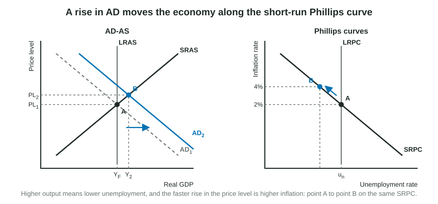
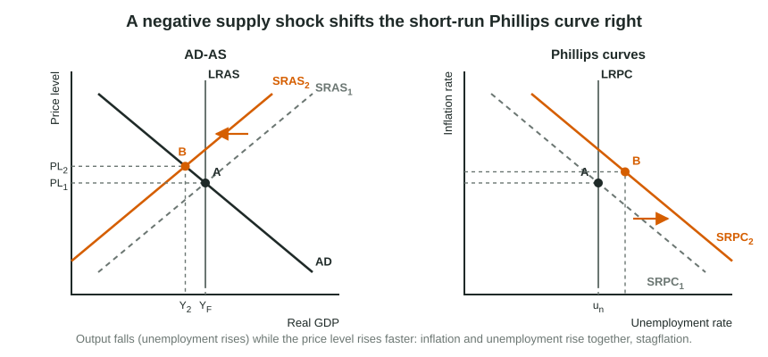

The AD-AS graph tracks the price level and real output. Many questions about policy, though, are asked in terms of two rates people watch every month: the inflation rate and the unemployment rate. The Phillips curves put those two rates on one graph. They carry no new economics: every move on a Phillips curve graph is a move on the AD-AS graph seen from a different angle.
Drawing the graph
Put the Inflation rate on the vertical axis and the Unemployment rate on the horizontal axis. Never "price level" on this graph: the Phillips curves are about how fast prices rise, not how high they are. Draw two curves:
- The short-run Phillips curve (SRPC) slopes down. In the short run, lower unemployment comes with higher inflation, and higher unemployment with lower inflation.
- The long-run Phillips curve (LRPC) is vertical at the natural rate of unemployment (frictional plus structural). In the long run, unemployment returns to the natural rate whatever the inflation rate.
Where the SRPC crosses LRPC, the actual inflation rate equals the expected inflation rate: people built that rate into their wages and prices, and it came true. Label that point with its inflation rate on the vertical axis, as readers ask.
A change in AD: a movement along the SRPC

When AD shifts right, firms produce more and hire more, so unemployment falls; the price level rises faster than before, so inflation rises. On the Phillips curve graph the economy moves up and to the left along the same SRPC. When AD shifts left, it moves down and to the right: higher unemployment, lower inflation. The SRPC itself does not shift.
Worked example: place the short-run point. An economy is at its natural rate of 5 percent unemployment with 2 percent inflation, which is also the expected rate. The central bank lowers its policy rate and AD shifts right.
- Which graph move? A change in AD: a movement along the SRPC, not a shift.
- Which way? More output means fewer unemployed; faster price rises mean more inflation. Up and to the left.
- Mark it. Point B sits on SRPC1 with unemployment below 5 percent and inflation above 2 percent; LRPC stays at 5 percent.
What shifts the SRPC

Two things shift the short-run curve:
- A supply shock. A jump in oil prices shifts SRAS left: the price level rises and output falls, so inflation and unemployment rise together. The SRPC shifts right. A positive supply shock (cheaper energy, a burst of productivity) shifts SRAS right and the SRPC left.
- A change in expected inflation. If people expect 4 percent inflation instead of 2 percent, they ask for wage increases to match, and firms raise prices faster at every unemployment rate. The SRPC shifts right (up). Lower expected inflation shifts it left.
| Event | AD-AS graph | Phillips curve graph |
|---|---|---|
| Rise in AD | AD shifts right | Movement up and to the left along SRPC |
| Fall in AD | AD shifts left | Movement down and to the right along SRPC |
| Negative supply shock | SRAS shifts left | SRPC shifts right |
| Rise in expected inflation | SRAS shifts left (higher nominal wages) | SRPC shifts right |
| Fall in the natural rate | LRAS shifts right | LRPC shifts left |
The long run
Suppose AD rises and the economy moves up the SRPC to 3 percent unemployment and 4 percent inflation. That cannot last. With unemployment below the natural rate, workers are scarce and inflation is above what they expected, so expected inflation rises and nominal wages rise. On the AD-AS graph SRAS shifts left; on the Phillips curve graph the SRPC shifts right. If people come to expect 4 percent inflation, the economy ends on LRPC at 5 percent unemployment with 4 percent inflation: the same unemployment rate as before, with higher inflation. That is why LRPC is vertical: in the long run there is no trade-off to exploit.
After a negative supply shock, the path back runs the other way. Unemployment is above the natural rate, so nominal wages and input prices fall, SRAS shifts back right and the SRPC shifts back left, until the economy returns to its starting point on LRPC.
Slip to avoid: shifting the SRPC for a change in AD, or drawing LRPC anywhere but the natural rate. Readers report that most students draw the SRPC correctly but lose points on LRPC, the expected inflation rate and the placement of the new point.
What moves LRPC
LRPC moves only when the natural rate of unemployment changes. Better job matching or training that shortens frictional and structural unemployment lowers the natural rate, so LRPC shifts left, the same event that shifts LRAS right on the AD-AS graph.